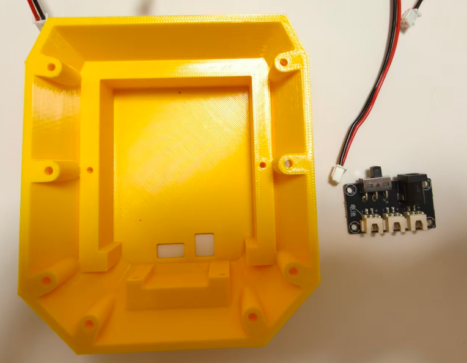
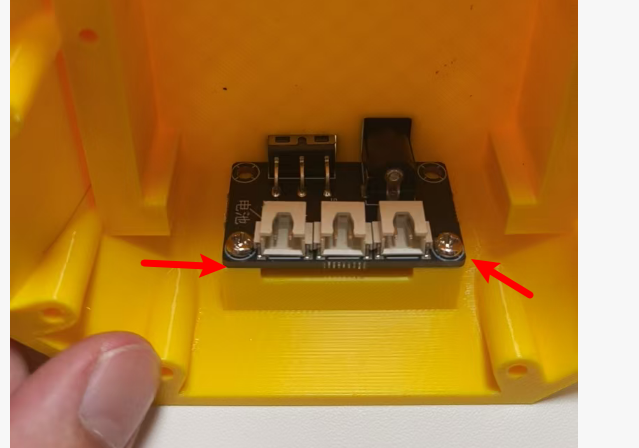
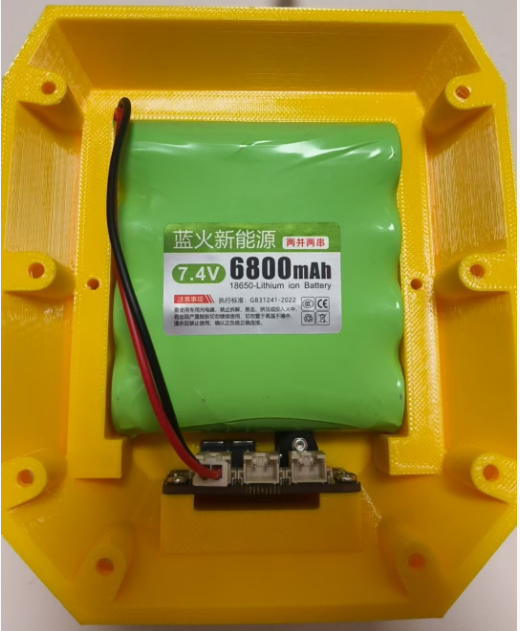

<!DOCTYPE lake>
<p data-lake-id="u62e9e49a" id="u62e9e49a" style="text-align: center"></p><p data-lake-id="u1add6791" id="u1add6791"><span data-lake-id="ucd32ab41" id="ucd32ab41">塞进洞里面去之后，记得打两颗螺丝</span></p><p data-lake-id="u2e106416" id="u2e106416" style="text-align: center"></p><p data-lake-id="ub51ca820" id="ub51ca820"><br/></p><p data-lake-id="u39fbe62c" id="u39fbe62c" style="text-align: center"><span data-lake-id="u5893f55f" id="u5893f55f">塞进去之后，就可以把电池线插好并稍微用力卡进去，另外两个端子分别接两根电源线<br/></span></p>